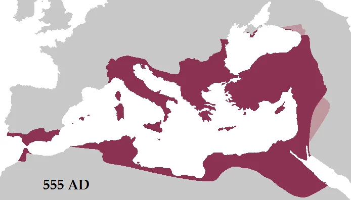

Ромејско царство, у савременој историографији најчешће називано Византијско царство, представљало је директан наставак Римског царства. Ово царство је опстало више од 1100 година — од освећења Цариграда 330. године до пада града под османску власт 1453. године, као најдуговечнија државна творевина у историји човечанства.
Главни град царства био је Цариград, данашњи Истанбул, смештен на стратешки важном мореузу између Европе и Азије. Током своје хиљадугодишње историје, Ромејско царство било је центар православне хришћанске цивилизације, чувар грчке културе, филозофије и књижевности, и чувар римског правног система.
Улога Ромејског царства у очувању античког наслеђа била је пресудна за развој светске цивилизације. Ромејски учењаци сачували су и преписивали дела Платона, Аристотела, Хомера и других античких аутора, без којих би европска ренесанса и модерна западна наука биле незамисливе. Царство је развило богату хришћанску теологију, филозофију, књижевност и уметност, створивши неке од најлепших цркава, икона, мозаика и рукописа у историји човечанства.
Културни и цивилизацијски утицај Ромејског царства далеко је превазилазио његове политичке границе и оставио трајног трага на целокупну европску и светску историју. Ромејски мисионари Ћирило, Методије и њихови ученици створили су ћирилицу и превели Свето писмо на словенски језик, чиме је хришћанство и писменост пренето словенским народима. Ромејско право је постало основа правних система многих европских земаља, док је ромејска архитектура и уметност обликовала византијски стил који се проширио од Русије до Италије.
Данас се ромејско наслеђе огледа у архитектури, уметности, вери, књижевности и државним традицијама широм Европе и света — од Балкана, до Италије и западне Европе. Без Ромејског царства, савремена Европа не би била иста: његов утицај је обликовао хришћанску цивилизацију, сачувао античко знање за будуће генерације и поставио темеље за развој модерне европске културе, науке и државности.
Ромејско царство је био мост између античког и савременог света. Сачувало је знање античких Грка и Римљана, развило хришћанску теологију и уметност, и пренело културу словенским народима.
Без Ромејског царства, данашња Европа не би била иста. Његов утицај се види у архитектури, уметности, праву, религији и језику многих народа.
Највећи обим под Јустинијаном I (527–565) и око 1030. године.
